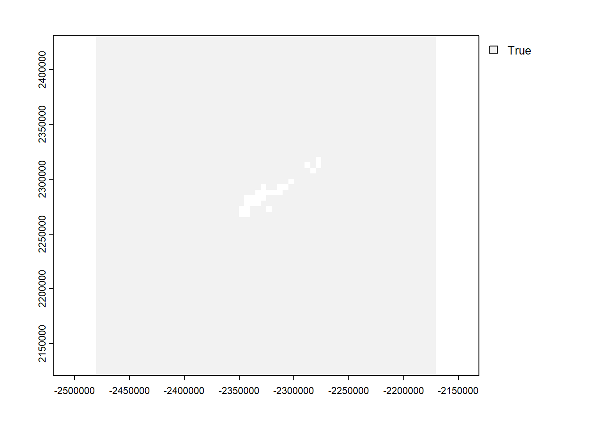

6 Seaward Extensions 1: Create Background Raster
This analysis was performed in R version 4.2.2 (2022-10-31 ucrt)
This document was last updated on 2023-03-30
What does this section cover:
- Creating a raster (grid) that can be used for delineation of a seaward extension boundary from a colony of breeding seabirds. This raster will:
- Have a specified cell size (resolution).
- Cover the location of the colony or colonies with a buffer greater than the maximum radius distance.
- Specify cells at either marine or terrestrial (ice can be classified as terrestrial).
- This is the required input for the tutorials on how to produce outputs for a single seabird colony [link to 2] and multiple seabird colonies [link to 3].
Load required R packages:
If the packages fail to load, you will need to install them.
## Load libraries ####
#install.packages("sf")
#install.packages("terra")
library(sf)
library(terra)Supply input data
[For Marine Toolkit, need to provide guidance on choice of resolution. Currently, 5km aligned with same scale as the Critchley et al. 2018 paper.]
The shapefile is not provide in the github repository as the file size was too large. The file can be downloaded here: https://data.bas.ac.uk/collections/e74543c0-4c4e-4b41-aa33-5bb2f67df389/
Alternatively, the output is provided, so this can be used directly in the next section.
## Colony location
latitude <- -60.683
longitude <- -45.644
## Land polygon
basemap <- read_sf(paste0(wd,"/data-input-files-bookdown/Coastline_high_res_polygon_v7.1"))
## Maximum colony radius distance (m)
max_colony_radius <- 149000
## Specified resolution of grid cell (m)
grid_res <- 5000Format colony locations as spatial objects
#format colony location as dataframe
df <- data.frame(cbind(latitude,longitude))
#Set coordinate reference system (CRS) for colony locations
col_locs <- st_as_sf(df,coords = c("longitude","latitude"),
crs = 4326)
#If needed, convert colony data to basemap projection
if(st_crs(col_locs) != st_crs(basemap)){
col_locs_proj <- st_transform(col_locs, crs = st_crs(basemap))
} else {
col_locs_proj <- col_locs
}Create raster
#First set a buffer (m) around the colony/colonies + the resolution of the grid to make sure the grid is large enough.
raster_buffer <- max_colony_radius + grid_res
#Find the extent of the colony locations
bounds <- st_bbox(col_locs_proj)
#Create the blank raster grid with the crs of the land polygon
ras <- terra::rast(xmin = bounds[[1]] - raster_buffer,
ymin = bounds[[2]] - raster_buffer,
xmax = bounds[[3]] + raster_buffer,
ymax = bounds[[4]] + raster_buffer,
resolution = grid_res,
crs = st_crs(basemap)$wkt)6.1 Fill in raster values with land polygon basemap
Convert the basemap, currently in polygon format, to a raster and then overlay with the blank raster
NOTE: Operation will take time depending on size of polygon data and detail of borders. i.e. Higher resolution maps take longer to process.
basemap_vector <- vect(basemap)
mask <- terra::rasterize(basemap_vector, ras)
ras <- is.na(mask)
ras[ras==0] <- 2
plot(ras)
#plot(st_geometry(col_locs_proj), pch = 19, col = "blue", add = T)